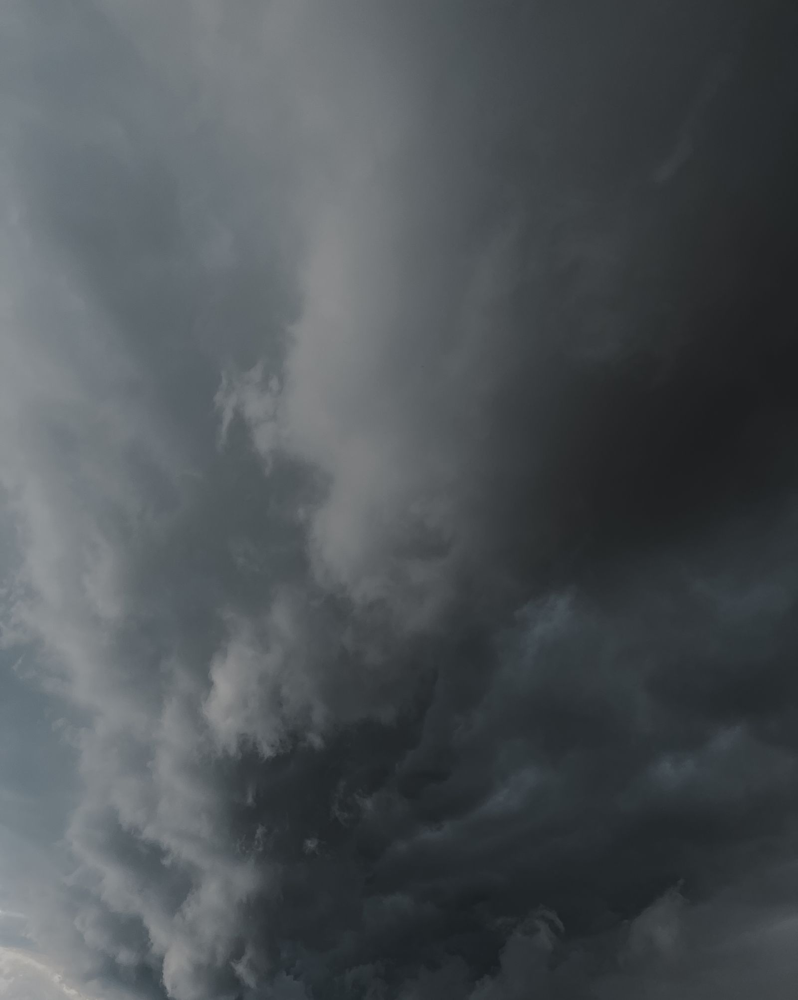

CASE 01 · Event forecast cover
The festival call — Harvest Moon Festival, Stillwater, Oklahoma
The ask. A three-day outdoor festival, 38,000 people a day, had a safety plan with a hole in it: nobody on the team was qualified — or willing — to sign the weather calls. The festival hired this practice for the Saturday, the day the Storm Prediction Center's outlook had circled since Wednesday.

The 06:00 Saturday briefing put the risk in writing: supercells after 20:00, hail to 1.25 inches the main threat. Triggers were agreed before gates opened — a warning polygon over the site, or lightning within 8 miles, pauses the show; a hail core on the current track moves the headliner earlier. Nobody would be negotiating thresholds in front of a crowd.
19:40 — a cell 40 miles southwest intensified through 55 dBZ. 20:05 — the headliner started forty minutes early, on the agreed trigger. 20:47 — a warning was issued for the county and the show paused, crowd to the pre-briefed shelter areas. The cell's hail core passed six miles north of the site.
The show resumed at 21:25 and the full programme finished. Zero injuries, zero evacuations improvised. The timestamped decision log went to the festival's insurer as part of the post-event file — which is why the triggers were written down at 06:00, not reconstructed afterwards.
“Rachel's 06:00 briefing moved our headliner forty minutes earlier and put the evacuation triggers in writing before gates opened. When the cell turned, nobody was improvising. We paused for thirty-five minutes, the storm passed north of us, and we finished the night.”
Dana Whitaker — Safety Officer, Harvest Moon Festival